Hola!! 🤘
Este es el primer post de mi nuevo blog. Acá iré escribiendo sobre distintas temáticas relacionadas al mundo de la programación y la ciencia de datos.
Bienvenido/a nuevamente.
En esta oportunidad te voy a enseñar a crear tu propio blog, como el que estás viendo ahora. Si! Como este mismo. Te parece?
Pues vamos a ello!!
Lo primero que debes saber es que este blog está construído sobre la base Quarto. Quarto es una nueva plataforma open-source, lanzada hace poco tiempo, y que busca facilitar la publicación de artículos científicos. La gracia que tiene es que soporta distintos lenguajes de programación (R, Python, Julia) en una sola aplicación.
Bueno, dentro de las cosas que permite hacer Quarto es crear un blog. Que es lo que haremos ahora.
Paso 1: Descargar Quarto
Lo primero que tienes que hacer es descargar Quarto desde su web oficial. Elige la versión que corresponda a tu sistema operativo. La instalación no tiene ninguna cosa extraña, es como cualquier programa nada más.
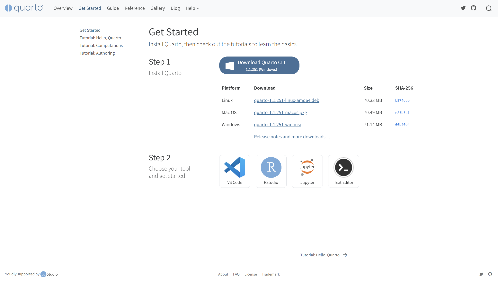
En lo personal, estoy usando RStudio como editor de texto, pero se pueden usar otros como Visual Studio Code o Jupyter Notebooks. En este caso, explicaré los pasos para RStudio.
Paso 2: Crea un proyecto
Si estás familiarizado con RStudio, sabrás lo que es un proyecto. Si no, pues un proyecto es un conjunto de archivos que se mantienen relacionados entre sí, de modo que sea más simple el desarrollo y vinculación. Además, de facilitar el uso de rutas relativas lo cual es genial a la hora de compartir código o de proyectos más grandes.
En RStudio debes ir al menú superior y seleccionar New Project…
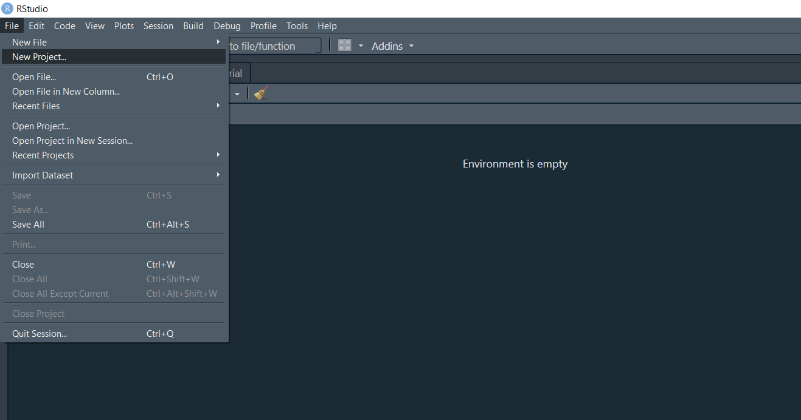
Eso te abrirá una nueva pestaña, en donde debes seleccionar la opción New Directory.
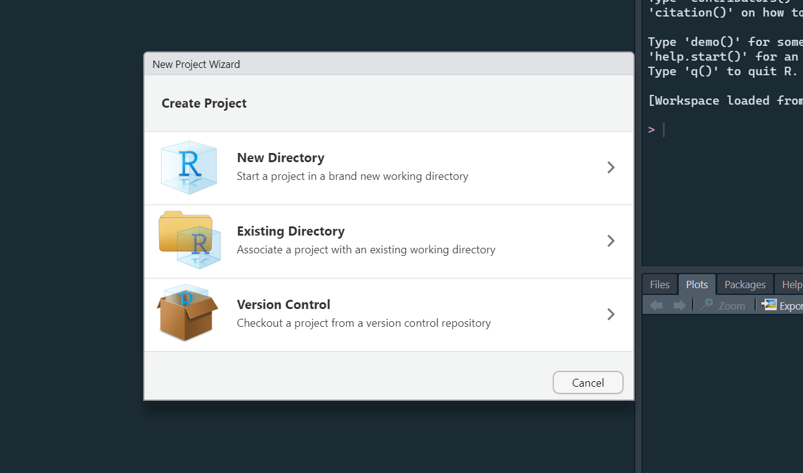
Luego, debes eligir el tipo de proyecto. En este caso, selecciona Quarto Blog.
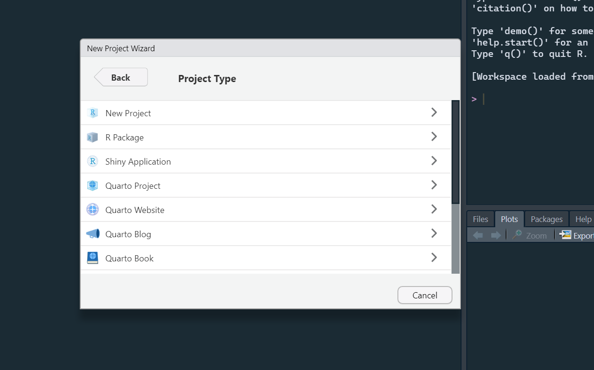
Se abrirá una nueva ventana. Acá debes poner el nombre de la carpera que vas a crear (en Directory name). Verifica la carpeta en donde vas a crear este directorio. Luego dale a Create Project.
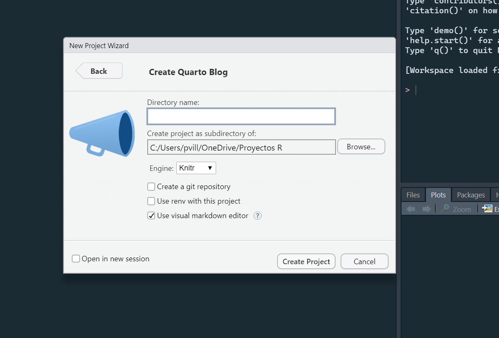
Con eso, Quarto te creará una serie de archivos y la estructura del blog de forma automática!!!
Verás que ahora tienes muchos archivos nuevos en tu visor.
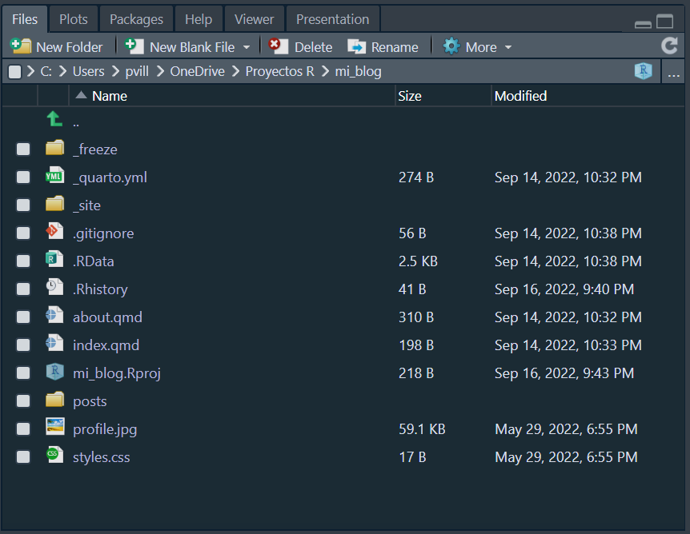
Paso 3: Preview de tu blog
Con los pasos anteriores, Quarto te creó un blog completamente funcional. Eso si, con artículos de muestra que después hay que eliminar o modificar, obviamente. Pero ya tienes la base.
Para revisar cómo se ve tu blog, debes darle clic al botón Render de la parte superior.
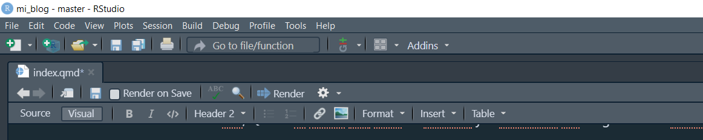
Verás una serie de cosas que van a sair en la consola de RStudio, pero es parte del proceso de renderizado. O sea, para armar el blog y pasar los archivos a una página web.
Si todo sale bien, se debería abrir tu blog en una pestaña de tu navegador.
Y listo!!!
Ya tienes tu primer blog 🎉
Es posible que tu blog se muestra en el mismo RStudio en una ventana lateral. Esa opción me parece que viene por defecto (no recuerdo bien), pero yo la tengo configurada para que me aparezca el preview en una ventana del navegador. Me gusta más esa opción, pues se ve mejor el contenido. Para poner esa opción, debes darle clic a la tuerca que está al lado derecho del botón Render y seleccionar Preview in Window.
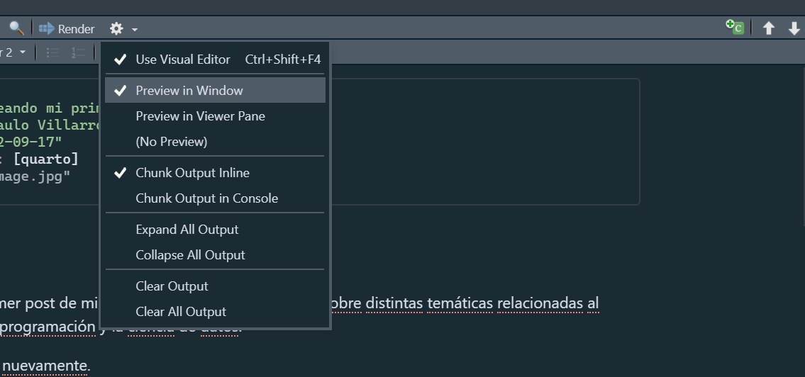
Fíjate que la web está en tu computador y se está mosrando desde una dirección que dice localhost. Esto es por ese mismo motivo. A pesar de que se ve como una web a través de tu navegador, el blog solo está en tu computador. No está subido a internet ni alojado en ningún servicio que permita que otros lo vean. Para eso, hay que hacer algunas cosas, que las veremos un poco más adelante.
Paso 4: Crear un post
Cuando creas tu proyecto de blog con Quarto, la aplicación crea la estructura y pone 2 post de ejemplo.
Si observas los archivos, verás una carpeta llamada posts. En esta carpeta es donde se deben ir guardando los archivos para los nuevos posts.
Por defecto te crea 2 carpetas: welcome y post-with-code
Esos son post de muestra, que los puedes eliminar. Pero antes que lo hagas, quiero que te fijes en cómo estan estructurados. Esa será la forma en que deberás crear tu próximas entradas.
Cada artículo (o post) consiste en una carpeta. Dentro de ella hay un archivo index.qmd y algunas imágenes.
Esta es la estructura de archivos que se te creará de forma automática:
Created _quarto.yml
Created index.qmd}
Created posts/welcome/index.qmd
Created posts/post-with-code/index.qmd
Created about.qmd
Created styles.css
Created posts/_metadata.yml
En la carpeta posts crea un nuevo archivo con el nombre de tu nueva entrada. Dentro de esa carpeta, crea un archivo .qmd y llámalo index. Es decir, te debería quedar un archivo de nombre index.qmd
Esto es fundamental. Siempre usa index para nombrar a los nuevos posts. De lo contrario, Quarto no encontrará el archivo al cual hacer referencia para renderizar adecuadamente la web.
Si ya estás familiarizado/a con R Markdown, notarás que trabajar con Quarto es muy similar. De hecho, los archivos .qmd tienen la misma estructura. Un encabezado (YAML) con algunas cinfiguraciones generales y luego el espacio para escribir texto.
Para este post, usé este YAML:
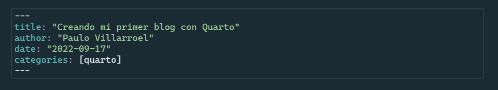
En artículos posteriores veremos cómo configurar el YAML, pues tiene muchas opciones.
Ahora que ya tienes creada una nueva carpeta dentro de posts y agregaste el index.qmd, básicamente ya tienes un nuevo artículo listo para el blog.
Guarda todos los cambios y dale a Render nuevamente. Si ya tenías abierto el blog en tu navegador, deberían verse reflejados los cambios realizados. Si no pasa eso, actualiza la página para ver los cambios.
Así se ve mi blog, solo con 1 artículo publicado (que es este).
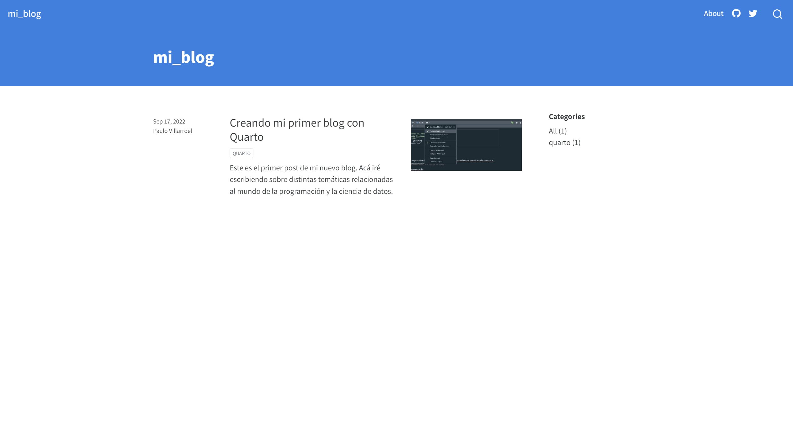
Paso 5: Subiendo el blog a GitHub
Me encanta el open-source y el compartir código. Y una de las mejores formas de dejarlo publicado en GitHub.
Para hacerlo, desde RStudio es bastante simple. Ah! Debes tener una cuenta ya creada en GitHub y tener GIT instalado.
Teniendo lo anterior ya realizado, podemos usar la librería {usethis} para simplificar el proceso. Acá puedes ver la documentación oficial.
Primero, instalamos la librería:
install.packages("usethis")Configuramos nuestras credenciales (los datos que usamos para la cuenta de GitHub):
usethis::use_git_config(
# your name
user.name = "Mi nombre",
# your email used in your GitHub account
user.email = "micorreo@gmail.com"
)Creamos nuestro GitHub PAT Token con usethis::create_github_token() (es como una contraseña, pero más segura). Cuando ejecutas este comando, se te abrirá una pestaña de tu navegador. Tendrás que verificar algunos permisos a GitHub. Luego, en la configuración del token, cambia el nombre, ajustael tiempo de expiración y el resto déjalo como está. Crea el token.
Se te mostrará una nueva página con tu claves.
Para guardar tu nuevo token, usa gitcreds::gitcreds_set(). En la consola se te mostrará un menú. Selecciona la opción 2 Replace these credentials. Luego copia el token de GitHub, actualiza y guarda tus credenciales.
Reinicia la sesión de RStudio para que se hagan efectivos los cambios. Usualmente puedes usar CTRL + SHIFT + F10 o del menú de arriba selecciona la pestaña de Session y luego Restart R.
Usa usethis::git_sitrep() para verificar si tus credenciales como nombre, email y PAT están correctamente configuradas.
Fíjate que salga este texto Personal access token for 'https://github.com': '<discovered>'
Con eso ya deberíamos estar listos con la configuración de GIT y GitHub.
Ahora configuremos algunas cosas más…
Usaremos use_git() para iniciar el control de versiones de GIT en nuestro proyecto.
usethis::use_git()
✔ Setting active project to '/Users/Desktop/name-of-your-blog/'
✔ Initialising Git repo
✔ Adding '.Rproj.user', '.Rhistory', '.Rdata', '.httr-oauth', '.DS_Store' to '.gitignore'
There are 8 uncommitted files:
* '_quarto.yml'
* '.gitignore'
* 'about.qmd'
* 'example-quarto-blog.Rproj'
* 'index.qmd'
* 'posts/'
* 'profile.jpg'
* 'styles.css'
Is it ok to commit them?
1: Not now
2: Yup
3: Negative
Selection: 2
✔ Adding files
✔ Making a commit with message 'Initial commit'
• A restart of RStudio is required to activate the Git pane
Restart now?
1: No way
2: Definitely
3: No
Selection: 2Ahora, usaremos use_github() para crear un repositorio en GitHub y subir el proyecto.
usethis::use_github()Si todo ha salido bien, se debería abrir tu navegador con el nuevo repositorio de GitHub.
Acá puedes ver el repositorio de este proyecto.
Paso 6: Desplegar con Netlify
Ahora vamos a publicar nuestro blog en internet para que otros lo puedan ver. Recuerda que hasta ahora, sigue estando solo en tu computador.
Para hacer el deploy (despliegue) usaremos Netlify.
Este es un servicio que hará que el blog esté disponible en una dirección web. Además, entre otras funciones super interesantes, tiene la opción de conectarlo a un repositorio de GitHub, que es lo que haremos en este caso.
Usaremos esta opción, ya que nos ayudará a ser más transparentes en todo el flujo de trabajo y podremos desplegar los cambios que vayamos realizando en nuestro proyecto y repo de GitHub.
Para eso, primero deber crearte una cuenta en Netlify. Mi recomendación es que lo hagas usando tu cuenta de GitHub.
Una vez iniciada sesión, se te mostrará algo así:
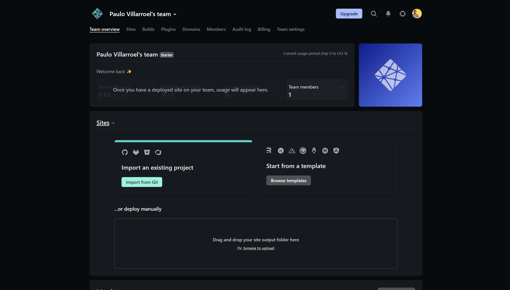
En la sección Sites, dale clic a Import from Git.
Selecciona GitHub.
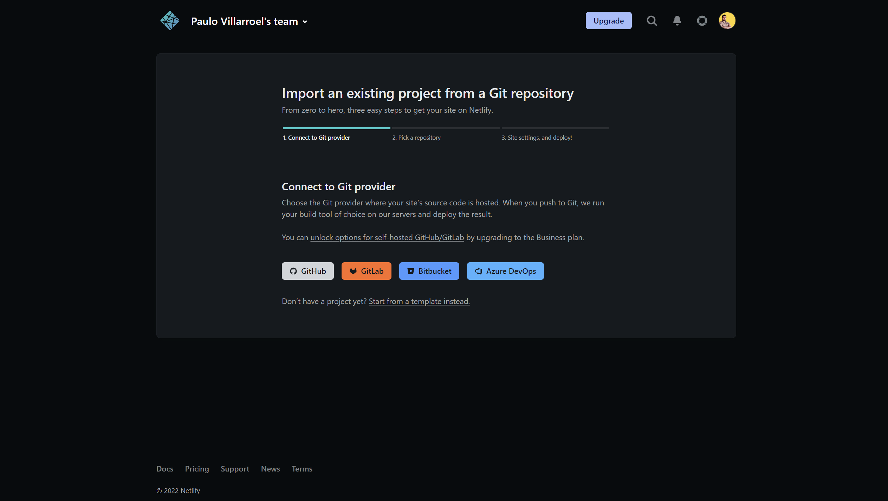
Se comenzará a sincronzar con tu perfil de GitHub y te mostrará todos los respositorio disponibles.
Elige el que acabamos de crear, donde está nuestro blog.
Se mostrará algunos detalles. Acá debes ingresar en Base directory _site, como se muestra en la imagen.
Este paso es importante, de lo contrario no funcionará tu web.
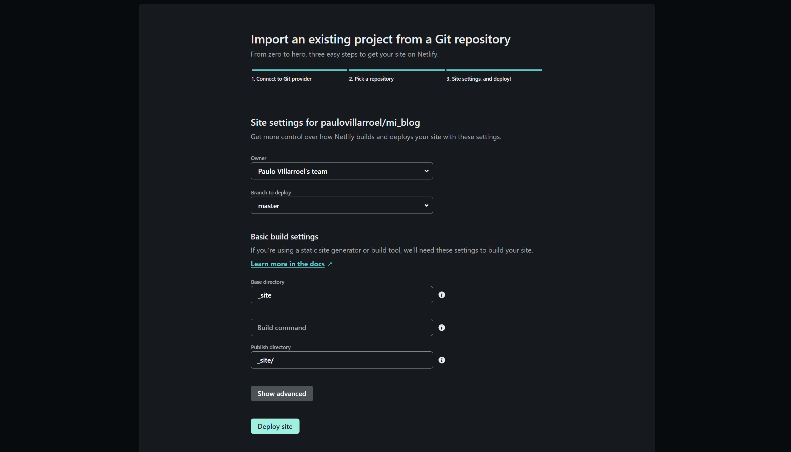
Dale al botón Deploy site.
Te va a salir algo como esto…
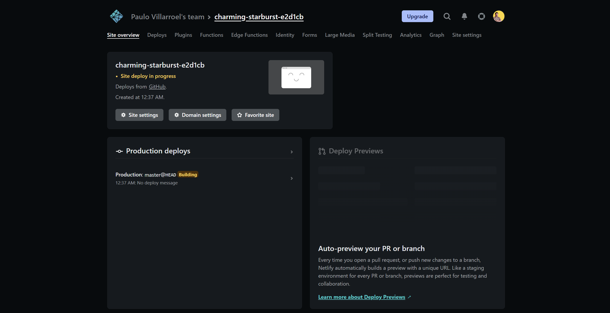
Si no cambia el estado y sigue saliendo el mensaje Site deply in progress, puedes actualizar la página de tu navegador. Habitualmente este proceso es rápido y solo toma unos segundos.
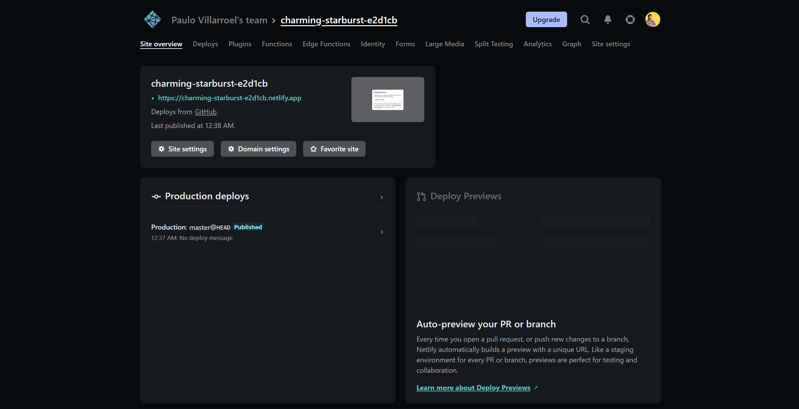
Si todo anda bien, debería estar ya desplegado nuestro blog.
Para acceder a él, anda al link que te ponen (xxxx.netlify.app).
Esta es una dirección web con un nombre aleatorio que te da Netlify. La podemos cambiar en la configuración por algo que nos haga más sentido. E incluso, podemos usar nustro propio dominio si es que lo tenemos.
Se abrirá una pestaña en tu navegador, mostrando tu blog!!! 😍
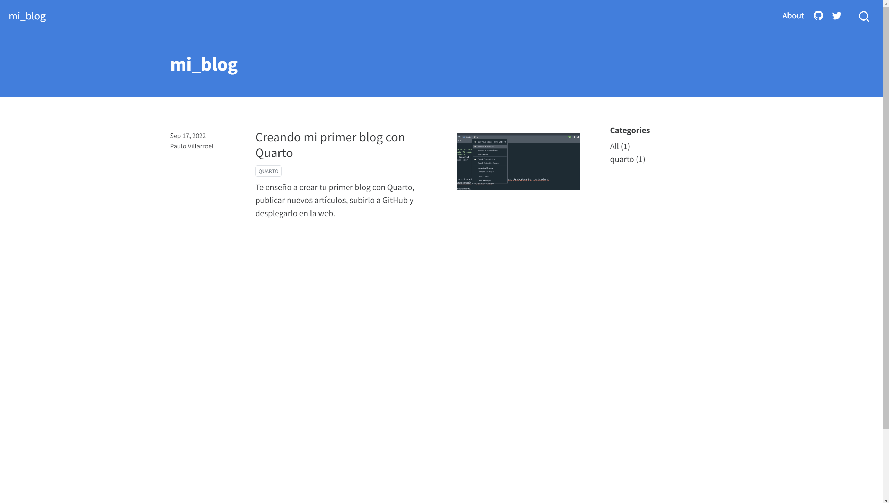
En Netlify, en la sección de Site settings podemos encontrar la opción para cambiar la dirección web.
Para ello, debemos dar clic en Change site name.
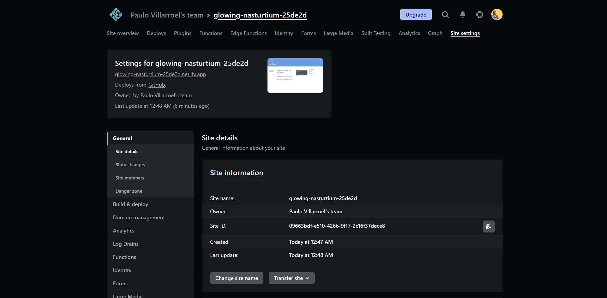
Se te abrirá una ventana. Ingresa el nombre que desees y listo.
Cambiado el nombre. Nota que este cambio de nombre cambia la dirección web, por lo que si has compartido el link previo, este ya no funcionará. Ten cuidado con cambiar el nombre a cada rato.
Espero que este tutorial te haya servido y que puedas tener tu propio blog.
En próximas entradas, estaré revisando cómo hacer ajustes al blog, personalizar algunas cosas estéticas y agregarle algunas funcionaidades.
Nos vemos! 😜
👉 Revisa la segunda parte de este tutorial en este enlace.